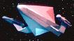

| SS Artemis Nave coloniale partita nel
2274 alla volta di Septimus Minor che ha fatto naufragio su
Tau Cygna V. |
The Ensigns of Command |
Divinità greca, figlia di Zeus e di Latona, simbolo della potenza della
Luna. |
| Astral Queen Comandata dal
capitano Jon Daily. Nel
2266 avrebbe dovuto
condurre la compagnia teatrale di Anton Karidian
sulla colonia di
Benecia, ma
James Kirk chiede al capitano
Daily, suo amico, di poter
condurre lui gli attori con l'Enterprise. |
The
Conscience of the King |
|
| Aurora
Rubata da Sevrin e distrutta dagli hippy. |
The Way to Eden |
Il modellino deriva da una modifica della nave
tholiana di The Tholian Web. |
| SS Columbia Vascello scientifico
naufragato su Talos IV nel
2236. |
The Cage,
The Menagerie |
Il Columbia è stato il primo shuttle ad entrare in servizio
attivo; lo shuttle è esploso durante il rientro in atmosfera l'1.2.2003 in
un tragico incidente in cui sono morti gli astronauti Rick D. Husband,
William C. McCool, Michael P. Anderson, David M. Brown, Kalpana Chawla,
Laurel Clark e Ilan Ramon. |
| SS Dierdre |
Friday's Child |
|
| Kobayashi Maru Simulazione di una
nave trasporto carburante neutronico di terza classe registrata presso Amber
Tau Ceti V. |
Star Trek II |
Kobayashi è il nome di un regista giapponese. |
| SS Milan NDT 50863 Helena e Alexander Rozhenko hanno
viaggiato a bordo di questa nave per raggiungere l'Enterprise
nel 2368. |
New Ground |
Difficilmente ha qualcosa a che fare con la squadra di calcio... |
| Rak-Miunis Fregata
kobheeriana. |
Duet |
|
| [Senza Nome] Cargo di classe J. |
Mudd's Women |
|
| 2 [Senza Nome] |
11001001 |
|